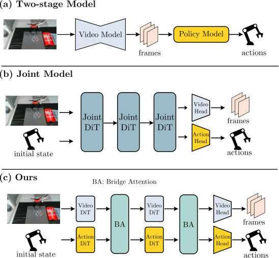
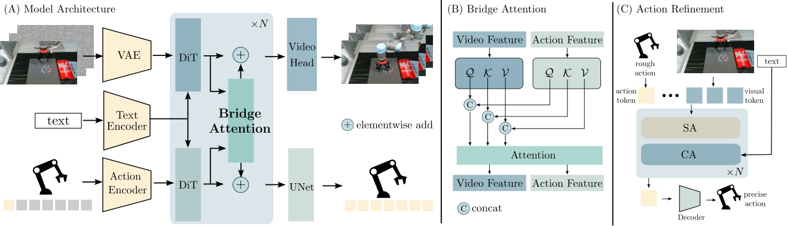
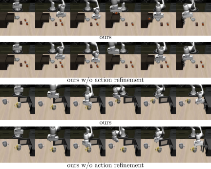
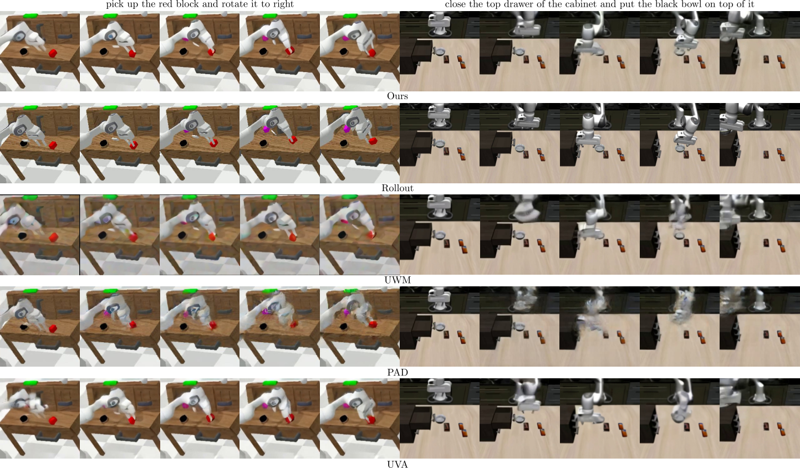
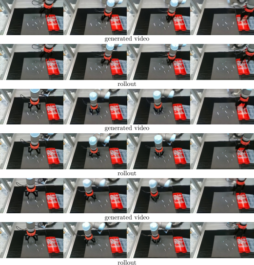
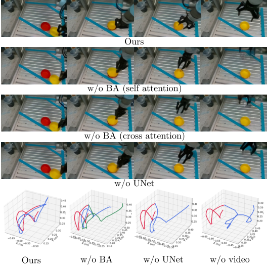
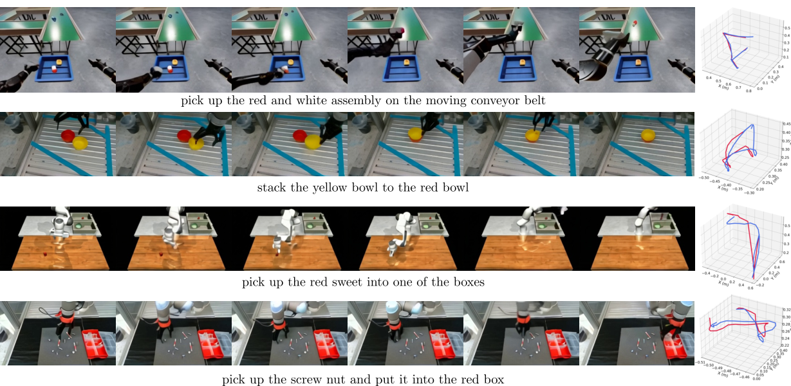

CoVAR: Co-generation of Video and Action for Robotic Manipulation via Multi-Modal Diffusion
1. 阅读定位与组会导读
| 导读项 | 这篇论文回答什么 | 读的时候重点盯哪里 |
|---|---|---|
| 研究对象 | 给定初始图像、机器人初始关节状态和语言指令，同时生成未来视频与逐帧动作。 | 它不是传统 VLA 的直接动作回归，而是把动作当成与视频共同生成的模态。 |
| 核心假设 | 预训练视频扩散模型已经拥有有用的视觉动态先验，动作分支应当利用但不能破坏这个先验。 | 看双分支设计和 Bridge Attention 是否真的比单一 joint DiT 更合理。 |
| 主要贡献 | 并联 Action DiT、Bridge Attention、低分辨率场景下的 Action Refinement Model。 | 把“架构新意”和“实验增益”分开判断：哪个模块真正被消融支持？ |
| 潜在影响 | 为 action-free video 数据进入机器人策略学习提供一种路线：先学视频世界，再补动作生成。 | 注意它当前仍依赖专家动作数据训练联合模型，还没有证明大规模无动作视频可直接带来策略提升。 |
这篇论文位于 embodied video diffusion / world model / robot policy learning 的交叉点。它面对的典型矛盾是：视频扩散模型可以从大量无动作标签的视频中学习视觉动态，但机器人策略需要动作；如果先生成视频再用 inverse dynamics 推动作，视频误差会传递到动作，且当机械臂或末端执行器不可见时动作推断会变弱；如果直接把视频和动作塞进一个 joint DiT，又可能牺牲已经学好的视频生成能力。
2. 问题背景：为什么视频生成还不等于机器人策略
2.1 二阶段方法的问题
二阶段方法通常先根据初始观测和语言目标生成未来视频，再训练 inverse dynamics 或策略网络把视频计划转为动作。这个思路直观，但有两个瓶颈：
- 误差级联：视频里物体位置、手爪姿态或接触时刻略有偏差，后续动作回归就会放大这些偏差。
- 可见性依赖：若视频中机器人本体被遮挡、裁剪，或者相机视角不足，单靠视觉变化很难还原真实关节控制。
2.2 早期融合 joint model 的问题
另一类方法把视频 token 和动作 token 拼接到同一个 DiT 里共同去噪。好处是信息共享直接，坏处是模态差异很大：视频是高维时空视觉 latent，动作是低维连续控制向量。论文认为，在专家演示数据有限时，让一个统一 DiT 同时适配两种模态，可能会干扰预训练视频模型的视觉知识。
2.3 CoVAR 的中间路线
CoVAR 的折中是“双分支 + 受控通信”：视频分支沿用预训练 OpenSora-1.2 的 video DiT，动作分支新增一个 Action DiT；两者不是完全隔离，而是在每个需要交互的位置通过 Bridge Attention 交换信息。这样既避免纯二阶段的后验动作推断，又避免单一 joint DiT 对视频先验的过度改写。

3. 方法拆解：Multi-modal Rectified Flow + 双 DiT + Bridge Attention
3.1 输入输出定义
模型输入包括初始观测图像 $v_0 \in \mathbb{R}^{3 \times H \times W}$、初始机器人关节状态 $a_0 \in \mathbb{R}^{L}$ 和语言指令 $c$。输出是未来视频 $v \in \mathbb{R}^{T \times 3 \times H \times W}$ 以及配对动作序列 $a \in \mathbb{R}^{T \times L}$。这里的动作不是从生成视频后再推断，而是在扩散/flow 过程中与视频共同生成。
| $v_0$ | 初始 RGB 观测图像。 |
| $a_0$ | 初始关节状态，维度为 $L$。 |
| $c$ | 自然语言任务指令。 |
| $v$ | 生成的未来视频序列，长度为 $T$。 |
| $a$ | 生成的动作序列，与视频帧时间对齐。 |
3.2 Multi-modal Rectified Flow
论文采用 rectified flow 来建模联合模态的生成路径。设联合数据样本为 $X_0=(x_0^1,x_0^2)\sim \Pi_{data}$，其中 $x_0^1$ 是视频 latent，$x_0^2$ 是动作。噪声端为 $X_1=(x_1^1,x_1^2)\sim(\mathcal{N}(0,I_{d_1}),\mathcal{N}(0,I_{d_2}))$。 线性路径对应的 ODE 是：
直觉：
rectified flow 希望学习一个从数据到噪声，或采样时从噪声回到数据的“直线路径速度场”。多模态版本只是把视频 latent 和动作一起作为联合状态。
神经网络 $v_\theta=(v_\theta^1,v_\theta^2)$ 预测两个模态的向量场，训练损失为：
阅读提醒：
论文公式里直接把两个模态的误差相加，没有展开说明两个模态的权重、归一化、时间采样是否完全共享。若要复现，这是一个需要从代码中确认的细节，但当前未发现官方代码链接。
3.3 模型架构：保留视频主干，并联 Action DiT
CoVAR 建在 OpenSora-1.2 之上。视频分支保留预训练视频 diffusion backbone；动作分支使用一个并联的 Action DiT。动作数据维度较低，所以作者没有为动作训练 VAE，而是用轻量 MLP encoder 得到 action embeddings。Action DiT 也通过 cross-attention 接收文本指令 $c$，形成与 Video DiT 对称的条件生成结构。

3.4 Bridge Attention
Bridge Attention 的目标是让两种模态交互，但保留各自的表示空间。设视频特征为 $f_v \in \mathbb{R}^{B\times N_v\times C}$，动作特征为 $f_a \in \mathbb{R}^{B\times N_a\times C}$。不同于标准 self-attention 使用同一组 Q/K/V 投影处理拼接 token，Bridge Attention 为视频和动作分别参数化 query、key、value：
直觉：
它像是在“各自翻译成自己的 Q/K/V 语言后再开会”。模态内部的投影保持独立，但注意力矩阵仍然允许视频 token 与动作 token 相互读取。
论文把它和两种替代通信方式比较：一种是直接 self-attention 拼接所有 token，另一种是 bidirectional cross-attention。消融显示 Bridge Attention 在视频质量和真实任务成功率上都更好。
3.5 Action decoder 与 Action Refinement
作者强调 action decoder 对动作精度和训练收敛很关键。CoVAR 用 UNet 作为动作解码器，而不是常见 MLP 或 ResNet。论文的解释是 UNet 的多尺度处理更适合捕捉时间动作序列中的层级运动结构。
对 Libero90 这类低分辨率数据集，论文额外使用 Action Refinement Model。原始 CoVAR 先产生 coarse actions，再由 refinement module 接收粗动作、初始图像 token 和文本条件，把粗动作变成更精细的控制。这个模块在 Libero90 上非常关键：没有 refinement 时成功率明显低于完整模型。

3.6 训练/推理伪代码
训练阶段：
for each demo (v0, a0, instruction c, future video v, action sequence a):
encode video into video latent x0_video
encode action into action embedding x0_action
sample Gaussian noise x1_video, x1_action
sample time t
interpolate joint state Xt between X0 and X1
Video DiT predicts video flow with text/image conditions
Action DiT predicts action flow with text/joint-state conditions
Bridge Attention exchanges video/action information
optimize video flow loss + action flow loss
推理阶段：
given current observation, current joint state, instruction:
initialize video/action noise
integrate learned rectified flow for 30 sampling steps
decode video frames and actions
if low-resolution setting: refine coarse actions
interpolate generated 35-frame open-loop actions to 100 Hz robot control4. 实验与结果：视频质量、动作成功率和消融
4.1 数据集与训练设置
| 数据集 | 规模/特点 | CoVAR 设置 |
|---|---|---|
| CALVIN | 约 20k 个 teleoperated demonstrations，带文本指令，视频分辨率 200×200。 | 训练设置 ABCD，随机生成 200 个 novel test scenes 做 rollout。 |
| Libero90 | 90 个任务，每个任务 50 条专家演示，视频分辨率 128×128。 | 使用 action refinement；refinement model 用 450 个 video-action pairs 微调。 |
| Real dataset | 作者自采 1K 条演示，包含碗堆叠、螺母/螺丝/木榫拾取放置等。 | 分辨率 180×320；UR5 平台；每 35 帧生成一次 video-action pair。 |
模型总参数量约 1.4B，其中视频扩散部分 1.1B，新增模块 0.3B。训练约 1 天，使用 4 张 GPU。真实机器人推理时，rectified flow sampling step 设为 30，一段 35 帧 video-action pair 生成耗时约 4 秒；机器人控制频率为 100 Hz，所以需要对生成的 open-loop 动作序列做插值。
4.2 视频质量
视频质量用 PSNR、SSIM、LPIPS 和 FVD 衡量。CoVAR 在 CALVIN 与 Libero90 上相对 UVA、PAD、UWM 这些 joint-model baselines 全面占优，并且接近纯视频模型 OpenSora-1.2。这一点支持作者的核心主张：加入动作模态后，没有显著破坏预训练视频模型的视频生成能力。
| 数据集 | 方法 | PSNR ↑ | SSIM ↑ | LPIPS ↓ | FVD ↓ |
|---|---|---|---|---|---|
| CALVIN | UVA | 19.01 | 0.758 | 0.180 | 97.90 |
| PAD | 18.72 | 0.734 | 0.174 | 83.40 | |
| UWM | 18.04 | 0.730 | 0.181 | 85.85 | |
| OpenSora | 19.60 | 0.768 | 0.171 | 61.00 | |
| CoVAR | 19.95 | 0.766 | 0.156 | 72.42 | |
| Libero90 | UVA | 19.57 | 0.716 | 0.154 | 86.21 |
| PAD | 19.65 | 0.781 | 0.218 | 98.39 | |
| UWM | 19.87 | 0.735 | 0.212 | 87.83 | |
| OpenSora | 20.18 | 0.817 | 0.156 | 63.33 | |
| CoVAR | 20.09 | 0.826 | 0.143 | 70.64 |

4.3 动作成功率
动作评估更能体现论文价值。CALVIN 上，CoVAR 在 drawer、cabinet、light、pick、push 五类任务上均优于 UVA/UWM/PAD/Unipi。Libero90 上，完整 CoVAR 明显好于无 refinement 版本，说明 refinement 不是装饰模块，而是低分辨率场景成功率的核心来源之一。
| CALVIN 方法 | Drawer | Cabinet | Light | Pick | Push |
|---|---|---|---|---|---|
| UVA | 0.875 | 0.667 | 0.711 | 0.758 | 0.785 |
| UWM | 0.813 | 0.733 | 0.644 | 0.576 | 0.714 |
| PAD | 0.781 | 0.467 | 0.489 | 0.485 | 0.642 |
| Unipi | 0.469 | 0.267 | 0.289 | 0.182 | 0.452 |
| CoVAR | 1.000 | 0.800 | 0.867 | 0.909 | 0.929 |
| Libero90 方法 | Pick-and-place | Open/Close | Combination |
|---|---|---|---|
| UVA | 0.676 | 0.640 | 0.489 |
| UWM | 0.606 | 0.600 | 0.400 |
| PAD | 0.625 | 0.480 | 0.355 |
| CoVAR w/o refinement | 0.592 | 0.520 | 0.422 |
| CoVAR | 0.873 | 0.860 | 0.711 |
| Real 方法 | Nut | Screw | Dowel |
|---|---|---|---|
| Unipi | 0.00 | 0.06 | 0.02 |
| RoboEnvision | 0.04 | 0.10 | 0.12 |
| CoVAR | 0.64 | 0.74 | 0.70 |

4.4 消融实验
消融在作者自采真实数据集上进行。Bridge Attention、UNet action head、视频分支都对结果有明显贡献。尤其是移除视频分支后，动作成功率降到 0.08，说明动作分支并不只是从语言和初始图像直接学策略，而强烈依赖视频分支提供的动态信息和预训练先验。
| 变体 | PSNR ↑ | SSIM ↑ | LPIPS ↓ | FVD ↓ | Success ↑ |
|---|---|---|---|---|---|
| w/o BA (SA) | 16.83 | 0.693 | 0.255 | 137.66 | 0.32 |
| w/o BA (CA) | 16.56 | 0.645 | 0.263 | 145.26 | 0.20 |
| w/o UNet | 16.85 | 0.690 | 0.255 | 141.62 | 0.24 |
| w/o video | - | - | - | - | 0.08 |
| CoVAR | 17.67 | 0.736 | 0.238 | 133.89 | 0.68 |

5. 图表精读
5.1 Fig. 1：论文真正想说的不是“联合生成”本身
Fig. 1 的三栏对比非常关键。二阶段模型的问题是视频和动作之间没有端到端对齐；joint model 的问题是所有模态在同一个 DiT 中过早混合；CoVAR 的主张是“动作需要视频先验，但不应该吞掉视频主干”。因此，论文的技术中心不是又提出一个 multi-modal diffusion，而是提出一种针对机器人视频/动作这种非对称模态的通信结构。
5.2 Fig. 2：Action DiT 的定位
Action DiT 不是一个小的 inverse dynamics head。它参与 rectified flow 去噪，和视频分支一起生成完整 action sequence。动作分支可以看文本，也可以通过 Bridge Attention 读视频分支信息。这个定位解释了为什么 w/o video 成功率极低：视频分支不只是输出可视化结果，还承担了动态先验的中间表征角色。
5.3 Fig. 7：视频-动作轨迹对齐

这张图最适合在组会中用来讨论“视频质量指标”和“动作可执行性”之间的关系。视频看起来合理并不自动意味着动作可执行；CoVAR 的优势在于它让动作生成直接受视频动态建模约束，而不只是事后从视频估计动作。
5.4 表格读法：不要只看粗体
视频质量表中，CoVAR 并不总是压过 OpenSora，尤其 FVD 上 OpenSora 更好。这其实是合理的：OpenSora 是纯视频生成模型，CoVAR 额外承担动作生成。论文真正需要证明的是：CoVAR 比 joint baselines 视频更好，同时动作成功率也更高。按这个标准，结果是支持主张的。
6. 可复现清单与实现细节
6.1 从论文可直接抽出的复现参数
| 项目 | 论文给出的设置 |
|---|---|
| 基础代码/模型 | OpenSora-1.2 codebase；视频扩散部分约 1.1B 参数。 |
| 新增模块 | 约 0.3B 参数，包括 Action DiT、Bridge Attention 相关参数、UNet action decoder/refinement 等。 |
| 总参数量 | 约 1.4B。 |
| 训练帧数 | 每条数据采样 35 帧。 |
| 训练资源 | 约 1 天，4 张 GPU。 |
| 真实数据分辨率 | 180×320，用于更快收敛和推理。 |
| 真实机器人推理 | 35 帧 video-action pair；rectified flow sampling step = 30；每段约 4 秒。 |
| 控制执行 | UR5 平台；机器人 100 Hz 控制，对 open-loop 动作序列插值。 |
| Libero90 refinement | 用 450 个 video-action pairs 微调 action refinement model。 |
6.2 仍需代码确认的细节
- 视频 latent 的具体 VAE/patch/token 形状，以及 Action DiT 的 depth、width、attention 插入位置。
- 视频 loss 和动作 loss 是否做尺度归一化，是否存在额外权重。
- 两个模态是否共享同一个时间步 $t$ 和噪声调度；论文直觉上应当共享，但公式未详细展开。
- UNet action decoder 的具体输入排列：动作 token 是按时间维做 1D/2D 结构，还是映射成类似 feature map。
- Action refinement 的训练目标、学习率、输入 coarse action 是否 detach，以及推理时是否总是启用。
- 真实机器人实验中每个任务的 trial 数量和失败统计口径。
6.3 与已有路线的关系
CoVAR 和 UVA/UWM/PAD 都属于“视频与动作联合建模”阵营，但它更强调复用预训练视频扩散模型。和 Unipi/RoboEnvision 这类二阶段方法相比，它避免把动作学习完全交给后验 inverse dynamics。可以把它理解为 embodied diffusion 里的一个架构选择：视频分支保留强视觉先验，动作分支以独立 DiT 学控制，再通过受控 attention 建立耦合。
7. 批判性讨论与组会问题
7.1 论文的强点
- 问题切得准：视频扩散与机器人策略之间的 action label 缺口是真问题。
- 架构动机清楚：并联 Action DiT 比“把动作硬塞进视频 DiT”更符合视频/动作非对称模态的特点。
- 消融有支撑：Bridge Attention、UNet decoder、视频分支都通过 ablation 体现了贡献。
- 真实实验有说服力：真实小物体操作成功率比二阶段 baseline 高很多，说明动作精度不是只在仿真里有效。
7.2 需要保持谨慎的点
- 对大规模 action-free video 的利用尚未完整证明：论文动机说 CoVAR 有助于利用大规模视频数据，但实验主要仍是有动作演示的数据集。
- 推理速度偏慢：真实机器人每段 35 帧生成约 4 秒，适合 open-loop chunking，但离高频闭环控制还有距离。
- Action refinement 的泛化边界不清楚：Libero90 上提升很大，但它本身用 450 对 video-action 数据微调，是否能迁移到更复杂真实场景仍需验证。
- 缺少 3D 几何：作者也承认当前只使用 monocular videos，空间几何理解受限。
- 真实数据规模较小：1K demos 足以展示 proof-of-concept，但还不足以说明大规模真实操作的鲁棒性。
7.3 组会讨论题 1：Bridge Attention 的收益来自哪里？
可以让大家比较三种信息交换方式：直接 self-attention、bidirectional cross-attention、Bridge Attention。关键问题是：Bridge Attention 的提升到底来自“模态特定 Q/K/V 投影”，还是来自更大的参数量和更好的初始化路径？如果要进一步证明，理想实验应控制参数量，把 self-attention baseline 做成同等规模，并报告 attention map 或模态间 token 读取强度。
7.4 组会讨论题 2：CoVAR 是 world model、policy，还是数据生成器？
CoVAR 同时生成未来视频和动作，因此可以被解释为 world model，也可以作为 open-loop policy 使用，还可以为视频数据补动作标签。三个定位会导向不同评价标准：world model 看长期预测一致性，policy 看闭环成功率和安全性，数据生成器看生成样本能否提升下游策略。论文当前最强证据是 policy 成功率；“可扩展数据生成器”的证据还需要下游数据增强实验来补齐。
7.5 后续研究方向
- 加入 3D 表示：结合 depth、point cloud 或 3D foundation model，把 monocular 视频先验扩展到更可靠的空间推理。
- 闭环化：将 35 帧 open-loop chunking 改为 receding horizon，并用实时观测纠偏。
- 验证 action-free video scaling：用大量无动作机器人视频或人类操作视频预训练视频分支，再少量动作数据对齐。
- 更严格的 action refinement ablation：测试 refinement 对其他 baseline 的帮助，确认它是 CoVAR 特有优势还是通用后处理器。